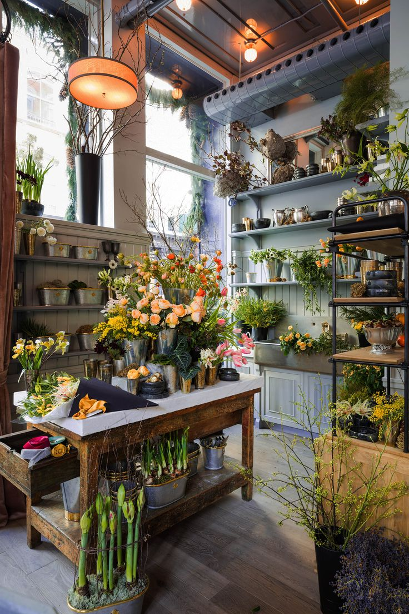
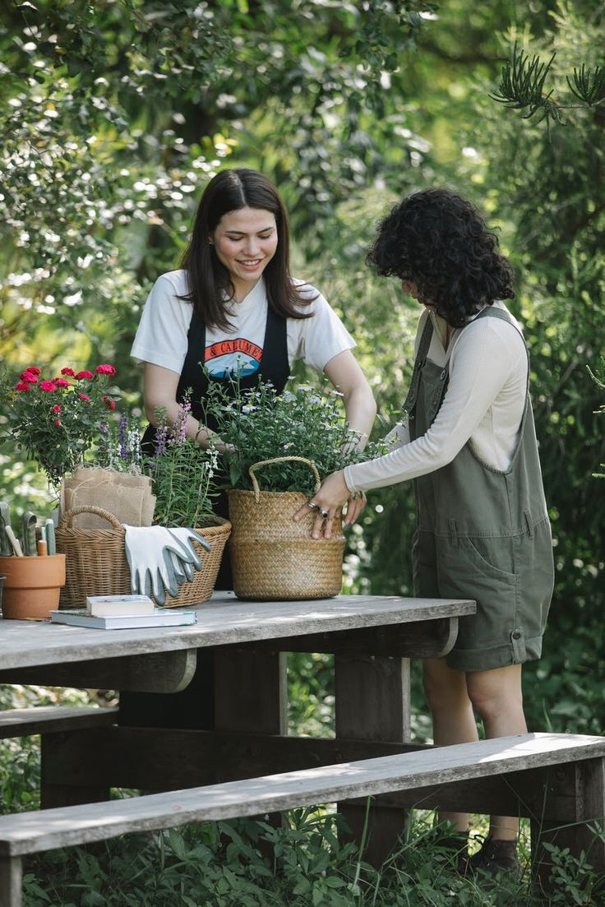

ABOUT US

Blossoming Through Time
Founded in 2020, FLARISS began as a dream rooted in a love for the enchanting world of flowers.
Vjollca and Blerta, our visionary founders, envisioned a space where each bloom could tell a unique
story,
and where the art of floral design could weave a tapestry of emotions.
Over the years, our journey has been colored with the vibrant hues of countless petals and the fragrant
memories of celebrations big and small. From humble beginnings, we've grown into a cherished destination
for
those seeking not just flowers, but an experience that transcends the ordinary.

At FLARISS, we understand that every occasion is as unique as the individuals it
celebrates. Our team of skilled floral designers brings passion and creativity to every arrangement,
ensuring that each bloom is a personalized work of art. Whether it's a wedding, a birthday, or a moment
of
quiet joy, we're here to craft the perfect floral expression for you.